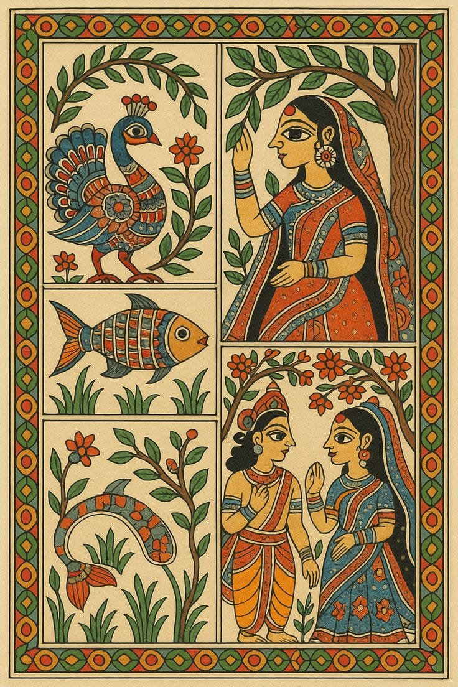
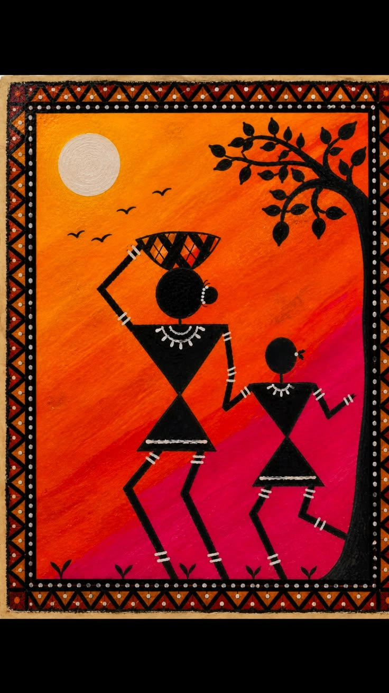

Bharatanatyam
Tamil Nadu
One of India's oldest classical dance forms known for expressive gestures, rhythmic movements and traditional storytelling.
Kathak
North India
A graceful dance form famous for fast footwork, spins and storytelling through expressions.
Kathakali
Kerala
A traditional dance-drama known for colorful costumes, face makeup and powerful expressions.
Kuchipudi
Andhra Pradesh
A classical dance combining music, expressions and dramatic performances.
Odissi
Odisha
Known for elegant poses, temple traditions and beautiful body movements.
Manipuri
Manipur
A gentle dance style inspired by traditional stories and devotional themes.

Madhubani Painting
Bihar
Traditional folk art famous for colorful patterns, nature themes and cultural stories.

Warli Art
Maharashtra
A tribal painting style showing village life, festivals and daily activities.
Tanjore Painting
Tamil Nadu
Famous for gold foil work and detailed paintings of gods and traditional themes.
Pattachitra
Odisha
Ancient painting style based on mythology and religious stories.
Kalamkari Art
Andhra Pradesh
Hand-painted textile art created using natural colors and traditional designs.
Hindustani Music
North India
A classical music tradition using instruments like Sitar, Tabla and Flute.
Carnatic Music
South India
A traditional music style known for compositions, rhythm and devotional songs.
Sitar
Musical Instrument
A famous Indian string instrument used in classical performances.
Tabla
Musical Instrument
A traditional percussion instrument creating rhythmic patterns.
Veena
Musical Instrument
An ancient Indian string instrument connected with classical music.